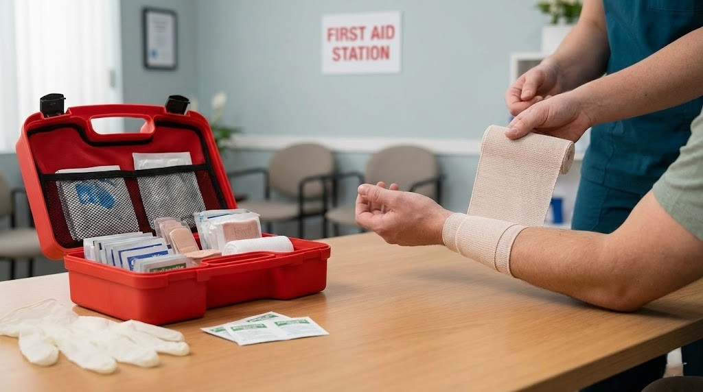
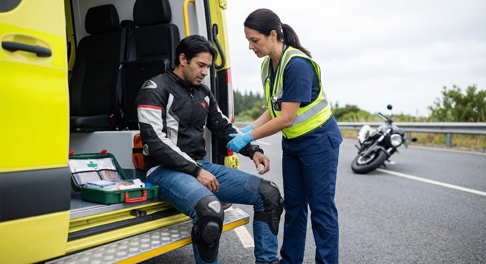

Because seconds matter on the asphalt. Equip yourself with the knowledge and tools needed to handle roadside emergencies before professional help arrives.
Every rider should carry a compact, accessible medical kit. We cover exactly what you need to pack—from tourniquets to burn gels—and how to use them effectively when things go wrong.
Heavy-duty scissors designed to rapidly and safely cut through tough motorcycle gear like leather or Kevlar without injuring the rider further.
The single most important tool for severe limb bleeding. Always ensure you buy a certified combat application tourniquet and know how to apply it.
Specially treated dressing that accelerates blood clotting. Crucial for packing deep wounds where a tourniquet cannot be applied.
Exhaust pipe burns and friction burns (road rash) are common. These sterile, cooling gels provide immediate relief and protect against infection.
Always protect yourself first. Pack multiple pairs of bright-colored, thick nitrile gloves to maintain a sterile environment and prevent cross-contamination.
A compact barrier device with a one-way valve. Essential for safely administering rescue breaths while protecting yourself from fluids.

Knowing how to assess a crash scene, stabilize a downed rider, and manage severe trauma can be the difference between life and death. Learn the protocols every responsible rider needs to know.
Follow these 4 critical steps immediately after a motorcycle incident.
Never rush blindly into traffic. Park your bike safely off the road, turn on your hazard lights, and direct oncoming traffic away from the downed rider to prevent secondary collisions.
Dial emergency services immediately. Provide a precise location (use landmarks or GPS coordinates), the number of vehicles involved, and a quick brief on the apparent injuries.
Check for consciousness, airway clearance, and breathing. Do NOT remove their helmet unless they are not breathing and you cannot access their airway, as this risks severe spinal cord damage.
Address massive bleeding first using direct pressure or a tourniquet. Keep the rider warm to prevent shock, talk to them to keep them calm, and wait for professional paramedics to arrive.